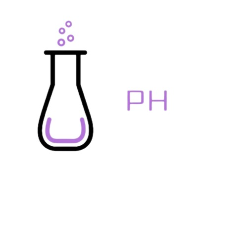

O pH é uma medida da acidez ou alcalinidade de uma solução aquosa. Ele indica a concentração de íons de hidrogênio (H⁺) presentes em uma substância e varia em uma escala de 0 a 14. O pH é fundamental em muitos processos químicos, biológicos e industriais.
Fórmula do pH
O pH é calculado pela fórmula pH = -log[H⁺], e pode ser medido com papel indicador, indicadores de pH ou pHmetro.
Exemplos no dia a dia
Água: pH 7 (neutro).
Suco de Limão: pH 2-3 (ácido).
Amônia: pH 11-12 (básico).
O pH é crucial em processos biológicos, industriais e ambientais, afetando a saúde, crescimento das plantas e qualidade da água.
| Tabela de pH | ||||
|---|---|---|---|---|
| 0 | ||||
| 1 | ||||
| 2 | ||||
| 3 | ||||
| 4 | ||||
| 5 | ||||
| 6 | ||||
| 7 | ||||
| 8 | ||||
| 9 | ||||
| 10 | ||||
| 11 | ||||
| 12 | ||||
| 13 | ||||
| 14 | ||||
| Legenda | ||||
|---|---|---|---|---|
| 0 à 6- Ácido | ||||
| 7- Neutro | ||||
| 8 à 14- Alcalino | ||||